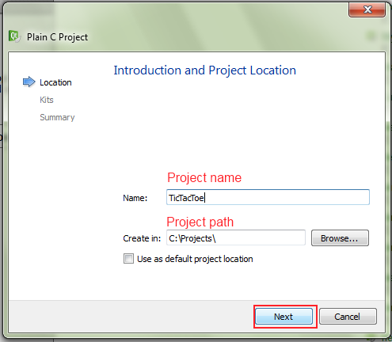

Before starting
This tutorial is directed for beginner programmer in C language. In further stage, I'll show sometimes some basis. If you dislike tutorials like this and you must complain just turn off this page and go do something more interesting, but if you have a time and want to know how to implement it, stay and read. I strongly advice you to rewrite all code. It's very important to you, to learn how to create project, how to use debugger, how to use programming IDE or understanding "what this stupid compiler want from me!". Remember practise is better than only reading and using copy-paste method. One more thing: this tutorial don't show 'only proper way'. There isn't the only right path to coding.
So, Are you ready to code? Let's do this!
I will use 'conio' library. Conio means "console input/output". This library isn't neither a part of standard C library nor POSIX standard. So, why I use it here? The answer is simple, conio.h is still using on universities in some part of The World. Second reason is, it's easy to code console application by using it. Conio supports text coloring, getting/setting cursor position, getting pressed key and other things. If you are student who use Borland Turbo C you probably have this library. In modern C compiler such as GCC or Visual Studio C compiler there aren't conio.h header and library or is not full implemented. So where can i get this for tutorial? You may download new implementation for Windows from here or if you use Dev-C++ you may download it from here. If you haven't possibility to download it you can find it in the "Extra" folder included to this tutorial. Documentation for this library you may find here.
Create project in QT Creator
Personaly I'm using QT Creator for this tutorial, but you can use any other IDE such as: Code::Blocks, Dev-C++, Visual Studio etc. Nonetheless I recommend you to install QT Creator (link to open source version ) or Visual Studio and start to use it. Is very convenient. You may find free Visual Studio 2015 community version here.
Unfortunately, i can't explain here how to setup libraries and include folder for others IDE. If you decide to use Turbo C++, there will be probably some changes in code, because compiler and linker are rather old. Turbo C++ users have to include <conio.h> instead of <conio/conio2.h>Prepare Conio library.
For any external libraries, I have special folder on C:\ harddrive. I use library from Dev-C++ repository (the same is in "Extra" folder included to this tutorial). First, I created folder "libs" on my hard drive C, and created subfolders "include" and "lib". "include" folder contains "conio" folder which has conio.h header, whilst "lib" has libconio.a. Picture above shows directory structure.
It's time to run QT Creator. Select from top menu "File->New file or Projects...
then select Non-Qt Project next select Plain C Project and click on Choose... button.
Type the project name in Name: field and click next.

Next window asks you to select compiler. For me it will be GCC/MinGW, but yours may be other (for example: MS 2010 compiler). Click Next.On last window, you can choose your version control program. It's in good habit to use control system version (eg: Git, Mercural, Bazaar etc.), but i don't use it here. So my choice is click on Finish button.
Voila! You've created your first project. Picture below shows you the basis of Qt Creator.
Next step is configure your project. You must add path to include and lib folders where is conio. To add include path you must write:
INCLUDEPATH += path_to_include In my case is:
INCLUDEPATH += C:\libs\include. To include compiled static library to project you must give path to library and say to linker that you want to include it when you will build project. To add path and library you use this:
LIBS += -Lpath_to_library -lname_of_library. Notice that, before path is -L (it's GCC command line switch), and before library name is -l. Another notice, the real name of static library is 'libconio.a', but to add library to compiled file we drop prefix 'lib' and suffix '.a'. In my case line LIBS looks like this: LIBS += -LC:\libs\mingw\lib -lconio Picture below shows my settings.

#include <conio/conio2.h>
int main(void)
{
textcolor(LIGHTGREEN);
textbackground(RED);
gotoxy(30,12);
cprintf("Hello World!");
getch();
return 0;
}
Line number 1. means you want to include header conio2.h to project. Why is here <conio/conio2.h> not <conio2.h>? Do you remember that my external libary folders looks like this:
Notice that i have subfolder conio in include directory, and i added path to include directory INCLUDEPATH += C:\libs\include. So to include conio.h you must add subfolder name to.
Line 5 turns on light green color for foreground of text, whilst line 6 turns on dark red colour for background. Line 7 sets the cursor to column 30 and row 12. On the dos epoch, standard text mode had size: 80x25. It means 80 columns and 25 rows. Notice function gotoxy gets arguments counts from 1 not 0! Of course it isn't only that one mode. For more information I send you to wikipedia.
Line 8 puts text "Hello World!" on screen. Next line waits for key pressing, and return the value of pressed key.
Build project
 and run it
and run it 
Congratulation! You've finished setting up your project with conio library. On next page you start code.
Some Qt Creator tips
- F2 when cursor is set on function name : swap between definition and declaration
- F4 key : swap between header file and .c file
- Ctrl + click on function name : go to declaration
- Ctrl + Space : autocomplete. For example: you had include stdio.h in your project, and want use printf function, so you may start type pri then click left Ctrl and Space then autocomplete do rest for you.
- Click between line number and funcion definition/declaration : wind/unwind function
- Click before line number : sets breakpoint for debug
- Tools->Options->Text Editor->Font & Colors->Color Scheme : changing color scheme
- Tools->Options->Text Editor->Completion : you can turn on autocomplete here
- Tools->Options->C++->Code Style->Edit... : can sets C/C++ code style formating